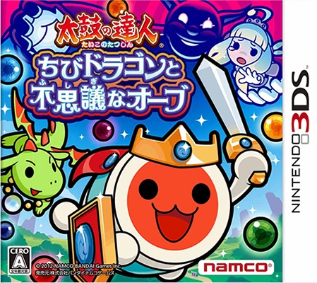
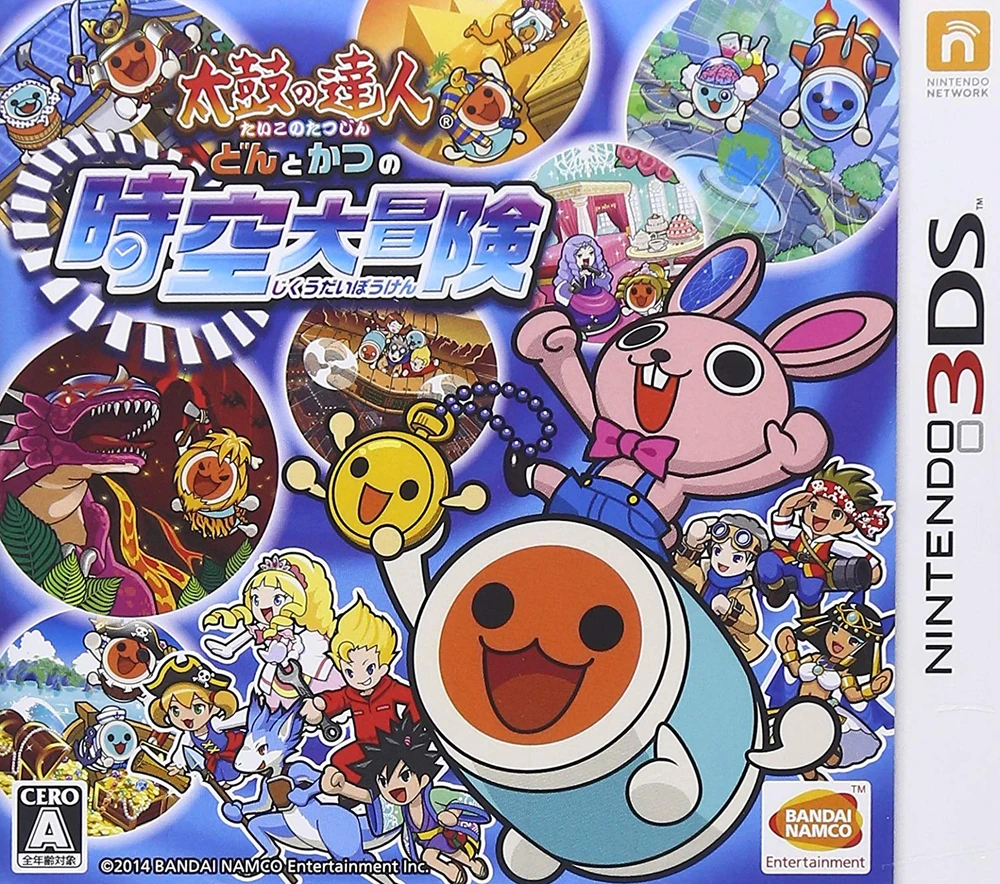
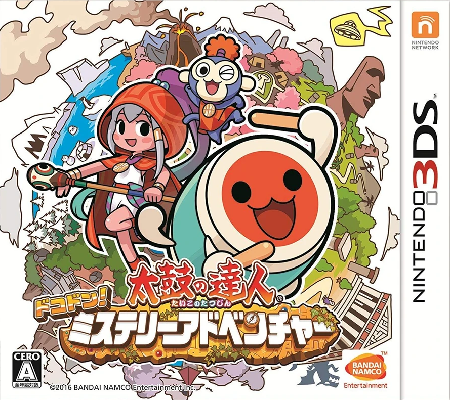

B

宝可梦：X
游戏简介：本作是第六世代正统宝可梦作品，故事舞台设定在以法国为原型的卡洛斯地区。主角将踏上冒险旅途，收集全新宝可梦、挑战道馆并对抗觊觎传说神兽的反派闪焰队。X版本专属传说宝可梦为哲尔尼亚斯，掌管生命。玩家在旅途中还会遇见伙伴莎莉娜与莎娜，邂逅博士与冠军，揭开卡洛斯地区有关永恒生命的古老秘密。

宝可梦：Y
游戏简介：本作是第六世代正统宝可梦作品，故事舞台设定在以法国为原型的卡洛斯地区。主角将踏上冒险旅途，收集全新宝可梦、挑战道馆并对抗觊觎传说神兽的反派闪焰队。Y版本专属传说宝可梦为伊裴尔塔尔，执掌死亡与毁灭。玩家在旅途中还会遇见伙伴莎莉娜与莎娜，邂逅博士与冠军，揭开卡洛斯地区有关永恒生命的古老秘密。

宝可梦：欧米伽红宝石
游戏简介：本作是第三世代重制作品，舞台设定在以日本九州为原型的丰缘地区。本作基于GBA原版《宝可梦红宝石》重制，主角周游丰缘挑战道馆，对抗企图利用陆地神兽扩张大陆的反派熔岩队。欧米伽红宝石专属传说宝可梦为固拉多，掌管陆地，游戏加入超级进化这一全新战斗机制，玩家在冒险途中邂逅各色同伴，穿梭海陆，解开远古神兽与千年灾厄的秘密。

宝可梦：阿尔法蓝宝石
游戏简介：本作是第三世代重制作品，舞台设定在以日本九州为原型的丰缘地区。本作基于GBA原版《宝可梦蓝宝石》重制，主角周游丰缘挑战道馆，对抗企图利用海洋神兽扩张海洋的反派海洋队。阿尔法蓝宝石专属传说宝可梦为盖欧卡，掌管海洋，游戏加入超级进化这一全新战斗机制，玩家在冒险途中邂逅各色同伴，穿梭海陆，解开远古神兽与千年灾厄的秘密。

宝可梦：日
游戏简介：本作是第七世代正统宝可梦作品，冒险舞台为以夏威夷为原型的阿罗拉地区。本作抛弃传统道馆系统，引入诸岛试炼与霸主宝可梦机制，主角来到阿罗拉开启海岛冒险，对抗妄图夺取虚空神兽力量的反派以太基金会。日版专属传说宝可梦为索尔迦雷欧，象征太阳，游戏新增Z招式战斗系统，玩家游历四座岛屿，结识伙伴，揭开阿罗拉地区关于光与虚空的神秘传说。

宝可梦：月
游戏简介：本作是第七世代正统宝可梦作品，冒险舞台为以夏威夷为原型的阿罗拉地区。本作抛弃传统道馆系统，引入诸岛试炼与霸主宝可梦机制，主角来到阿罗拉开启海岛冒险，对抗妄图夺取虚空神兽力量的反派以太基金会。月版专属传说宝可梦为露奈雅拉，象征月亮，游戏新增Z招式战斗系统，玩家游历四座岛屿，结识伙伴，揭开阿罗拉地区关于光与虚空的神秘传说。

宝可梦：究极之日
游戏简介：本作是《宝可梦：日》增强版作品，舞台依旧是以夏威夷为原型的阿罗拉地区。延续诸岛试炼与霸主宝可梦的特色玩法，主线新增究极异兽与究极之洞相关剧情，对抗妄图利用奈克洛兹玛力量的反派骷髅队。究极之日专属传说宝可梦为黄昏鬃狼，游戏保留Z招式战斗系统，玩家穿梭四座岛屿，结识一众伙伴，揭开阿罗拉地区关于光、虚空与异世界的宏大秘密。

宝可梦：究极之月
游戏简介：本作是《宝可梦：月》增强版作品，舞台依旧是以夏威夷为原型的阿罗拉地区。延续诸岛试炼与霸主宝可梦的特色玩法，主线新增究极异兽与究极之洞相关剧情，对抗妄图利用奈克洛兹玛力量的反派骷髅队。究极之月专属传说宝可梦为月夜鬃狼，游戏保留Z招式战斗系统，玩家穿梭四座岛屿，结识一众伙伴，揭开阿罗拉地区关于光、虚空与异世界的宏大秘密。
D

大逆转裁判：成步堂龙之介的冒险
游戏简介：本作时代设定于明治维新时期，日本留学生成步堂龙之介蒙受冤屈，远渡前往大英帝国，与法务助手御琴羽寿沙都、名侦探夏洛克・福尔摩斯相遇，一边参与异国的法庭审判，运用推理与辩论为委托人洗清嫌疑，一边追寻挚友亚双义一真死亡的真相，本作新增共同推理与陪审制系统，将近代东西方的时代风貌融入案件与剧情之中。

大逆转裁判2：成步堂龙之介的觉悟
游戏简介：本作承接前作的故事伏笔，明治时期的律师成步堂龙之介继续在英国法庭奋战，联合寿沙都、福尔摩斯等人，运用共同推理与陪审制度破解一桩桩悬案，逐步揭开横跨日英两国的重大阴谋，解开亚双义一真相关的全部真相，完成整部大逆转裁判故事的最终收束。

第七龙神3：CODE:VFD
游戏简介：本作是第七龙神系列最终作，讲述人类对抗7头真龙、阻止第七真龙VFD毁灭世界的故事。故事跨越过去、现代、未来三个时代穿梭冒险，解开龙灾起源真相。
E

恶魔幸存者：超频
游戏简介：本作是NDS《恶魔幸存者》的强化移植版，属于真女神转生系列的策略角色扮演游戏。东京因恶魔现世遭到彻底封锁，被困城内的少年主角借助COMP装置与恶魔签订契约，在仅有七天的生存时限里挣扎求生。
F

符文工房4
游戏简介：本作是Marvelous推出的3DS平台幻想风模拟RPG，玩家扮演失忆坠落到塞尔菲亚的王子/公主，一边打理城镇政务、经营农场、锻造料理、收服魔物并肩战斗，一边推进主线揭开阴谋，游戏支持男女双主角，拥有丰富角色剧情、恋爱结婚与养娃系统，通关后还有大量自由游玩内容。
G

怪物猎人3G
游戏简介：本作是卡普空基于Wii版《怪物猎人3》制作的G级强化资料片。完整保留系列独有的水下战斗，新增碎龙等大批怪物，追加难度更高的G级任务与海量装备，支持本地面联与擦身通信，存档可与WiiU高清版互通，也是系列登陆任天堂掌机的首部正统作品。

怪物猎人4
游戏简介：本作是是卡普空于3DS推出的怪物猎人系列正统续作，首次加入高低差地形与怪物骑乘机制，战斗玩法迎来重大革新，故事围绕黑蚀龙带来的狂龙病毒灾祸展开，玩家扮演猎人四处游历探索各地遗迹，收集素材锻造装备，既可以单人挑战各类强敌，也支持多人联机合作狩猎，是系列掌机上极具代表性的共斗动作游戏。

怪物猎人4G
游戏简介：本作是《怪物猎人4》的G级强化资料片，完整继承前作全部内容，保留立体地形与跳跃骑乘玩法，新增G1‑G3高难度任务、千刃龙、狱狼龙等怪物，加入狂龙病毒与极限个体等战斗机制，扩充大量G级武器防具与公会任务内容，支持最多四人联机共斗。

怪物猎人X
游戏简介：本作是卡普空在3DS推出的系列革新作品，本作不再是数字编号正统续作，引入狩猎风格与狩技两套全新战斗系统，同时新增艾露猫可直接出战的猫猎人模式，斩龙、泡狐龙、电龙、巨兽四大新怪物登场，大量历代经典怪物回归，保留联机共斗，玩法自由度大幅提升。

怪物猎人XX
游戏简介：本作是《怪物猎人X》的G级强化资料片，也是3DS平台怪物猎人系列的最终正统作品，本作新增古龙天彗龙与四大二名特殊个体，在原有四种狩猎风格基础上追加勇气、炼金两种风格，收录历代多个村庄据点，加入完整G级任务，任务量为3DS系列顶峰，支持本地与网络联机。

怪物猎人物语
游戏简介：本作是是卡普空在3DS推出的怪物猎人衍生回合制RPG，玩家不再是猎人，而是与怪物缔结羁绊的骑手，通过搜寻巢穴获取怪物蛋、孵化培育随行兽，借助牵绊之力与怪物并肩战斗，在宏大的世界中冒险解谜，讲述人与怪物共生的故事。
H

Hey! 皮克敏
游戏简介：本作是皮克敏系列的掌机衍生作品。奥利马船长的飞船意外坠落在陌生星球，为收集飞船启动所需的闪亮能源，他与各色皮克敏一同展开冒险。投掷不同特性的皮克敏破解机关、对抗野生生物，穿越风格各异的关卡，集齐资源帮助奥利马逃离这颗星球。

火焰纹章：觉醒
游戏简介：本作是拯救火纹系列命运的里程碑战棋作品，玩家扮演可自定义的主角，与伊利斯王国的库洛姆一同对抗毁灭未来的绝望威胁。

火焰纹章if：白夜王国
游戏简介：火焰纹章if的其中一条路线，主角在战场之上做出抉择，回归血脉故土白夜王国，为守护家乡对抗暗夜王国的入侵，完整讲述白夜一方的战争故事。

火焰纹章if：暗夜王国
游戏简介：火焰纹章if的其中一条路线，主角舍弃血脉故土白夜王国，选择留在养育自己的暗夜王国，投身入侵白夜的战争之中，完整讲述暗夜一方的战争故事。

火焰纹章回声：另一位英雄王
游戏简介：FC《火焰纹章外传》的完全重制，也是火焰纹章系列首款官方中文的作品，3DS平台火纹收官之作。双主角阿鲁姆与赛莉卡，分别踏上两条截然不同的道路，拯救陷入战乱的瓦伦西亚大陆。

幻想生活Link!
游戏简介：LEVEL‑5 出品的 3DS 奇幻生活 RPG，玩家可自由切换战士、铁匠、厨师等12种职业，在幻想大陆冒险、采集、锻造、做任务，Link版追加谜之岛屿，开放本地与网络联机，支持最多3名好友共同游玩。
J

禁忌的玛古那
游戏简介：符文工房团队打造的融合宿屋经营的策略 RPG。主角卢克斯继承一座偏僻无人光顾的宿屋，机缘邂逅失忆的精灵少女夏洛特，陆续收容多名各具性格的精灵少女。一边经营旅店加深羁绊，一边投身战斗揭开精灵与世界背后的禁忌真相，是3DS上一款风格独特的幻想作品。
M

牧场物语：起源的大地
游戏简介：本作是系列首部裸眼 3D 正统牧场物语。主角来到日渐衰败的回声小镇，接手一片荒弃的牧场。一边经营牧场，一边完成小镇复兴任务，重建整个城镇。

牧场物语：连接新天地
游戏简介：主角响应招募来到樫之木小镇成为牧场主，以贸易为核心，把农牧产品出口到各个国家，解锁更多贸易伙伴、种子、家具与建筑，推动小镇走向国际贸易都市。

牧场物语：三个村庄的重要伙伴们
游戏简介：本作是牧场物语系列 20 周年纪念作，核心设定是三座风格完全不同的村庄，玩家扮演来到这片土地的牧场主，经营牧场、种植作物、饲养动物，同时和三个村落的居民交往。

牧场物语：双子之村庄+
游戏简介：本作是 NDS《双子村》的 3DS 强化移植版，玩家来到关系不和的蓝铃村与此花村，选择定居其中一村，开展种田、畜牧、钓鱼采矿的牧场生活，参与料理大赛逐步化解两村矛盾，和村民增进好感、恋爱结婚生子，本作优化操作、新增开局特质与擦肩通信，体验治愈悠闲的四季田园日常。
N

逆转裁判123：成步堂精选集
游戏简介：本作是初代三部曲高清重制合集，收录《逆转裁判》《逆转裁判 2》《逆转裁判 3》以及追加章节《复苏的逆转》，以新手律师成步堂龙一的成长为主线，穿梭于案发现场搜集证据，在法庭上与检察官激烈对峙，破解一桩桩扑朔迷离的刑事案件，揭开案件背后隐藏的悲剧与真相，裸眼3D化优化画面，完整保留原作经典的侦探调查与法庭辩论玩法以及幽默又充满感染力的剧情。

逆转裁判4
游戏简介：本作是NDS《逆转裁判4》的强化移植版，故事发生在三代结局七年后，更换全新主角新人律师王泥喜法介，昔日传奇律师成步堂龙一因伪造证据丑闻被剥夺律师徽章，以落魄钢琴师身份登场，王泥喜与魔术师成步堂美贯搭档，面对摇滚检察官牙琉响也，依靠全新 “看穿” 系统与科学搜查破解四起离奇案件，一步步揭开深埋多年的司法黑幕。

逆转裁判5
游戏简介：本作故事承接《逆转裁判4》一年之后，在民众对司法丧失信任的 “法律的黑暗时代” 背景下，取回律师徽章的成步堂龙一，携手王泥喜法介与新人律师希月心音，借助全新的心理分析能力，接连破解多起离奇案件，一步步揭开尘封旧案的真相，洗刷夕神迅的冤屈，努力终结笼罩司法界的黑暗阴霾。

逆转裁判6
游戏简介：成步堂龙一前往神秘的异国克莱因王国，遇上崇拜灵媒的宗教审判制度，同时王泥喜法介在本土接手辩护工作，双线并行展开故事；本作回归的绫里真宵、异国检察官那由他等人登场，借助灵媒影像等新系统破解案件，一边揭开克莱因王国宗教背后巨大的阴谋，也探寻王泥喜自身的身世过往，延续律师反抗不公审判、追寻真相的核心主题。
S

塞尔达传说：时之笛3D
游戏简介：本作是N64传世名作《塞尔达传说：时之笛》的3DS高清重制作品，少年林克在海拉鲁大陆踏上宿命冒险，借助时之笛穿梭于童年与成年两个时空，穿行森林、火山、水之神殿等重重迷宫，对抗妄图夺取三角神力的魔王加农多夫。

塞尔达传说：众神的三角力量2
游戏简介：本作是SFC《众神的三角力量》时隔二十余年的续作，沿用俯视视角，舞台依旧是海拉尔，同时新增平行世界罗乌拉尔。林克获得化为壁画贴墙移动的核心能力，打破系列传统，道具改为租赁购买，迷宫可以自由挑战顺序，拥有极高解谜自由度。故事围绕巫师尤加的阴谋、两个世界的命运展开，巧妙的关卡设计、精妙谜题与怀旧氛围，是3DS平台评价极高的塞尔达佳作。

塞尔达传说：姆祖拉的面具3D
游戏简介：本作是N64经典《梅祖拉的假面》的3DS重制作品，少年林克误入异世界特米拉，月亮正不断坠落，世界仅有三天便会迎来毁灭。依靠时之笛可以无限回溯时间，林克收集各式各样的面具获得变身能力，在循环的三天里见证各路 NPC 的悲欢故事，解开四大区域的谜题，阻止月亮撞击大地的悲剧。

塞尔达传说：三角力量三剑客
游戏简介：本作是主打多人联机的衍生作品，舞台为时尚王国希托比亚。三位林克一同踏上冒险，通过服装获得不同能力，分工协作破解地牢谜题，打倒女巫解除公主身上的诅咒。游戏支持单人游玩与本地联机，关卡设计围绕多人配合展开。

塞尔达无双：海拉尔全明星
游戏简介：本作是无双类衍生移植作品，融合塞尔达世界观与割草战斗玩法。收录WiiU版全部内容并追加风之杖相关新角色与关卡，众多系列可操作角色轮番登场，驰骋海拉尔战场击破海量敌人，体验热血爽快的无双战斗。
T

太鼓达人：小龙与神秘宝珠
游戏简介：本作为首次登陆3DS平台的作品，支持触屏操作与3D立体演出。游戏在传统演奏模式基础上新增冒险模式“小龙和神秘宝珠”，玩家需与伙伴小龙穿越七大幻想世界，通过演奏作战击败魔王，夺回被抢走的七个歌声宝珠。

太鼓达人：咚和咔的时空大冒险
游戏简介：本作以时空冒险为主题，并在音乐游戏中融合了RPG及怪兽养成元素，玩家所扮演的咚酱与咔酱可以在多个不同的时代和国度中来回穿梭展开冒险，并将太鼓的演奏化为力量，逐步收集、组建和培养属于自己的怪兽队伍，最终阻止坏人们的阴谋，保护时空和平。

太鼓达人：咚咔！神秘冒险记
游戏简介：本作融合节奏音游与RPG冒险玩法，讲述咚酱、咔酱与提雅周游世界各地遗迹，夺回宝物欧帕兹、阻止反派阴谋的故事。
W

王国之心3D：梦降深处
游戏简介：本作是Square Enix与迪士尼合作的3DS动作RPG，承接《王国之心BBS》剧情，索拉与利库参加大师认证考试，进入沉睡的世界冒险，可操控两名主角，新增梦食伙伴系统，穿梭多个迪士尼世界，战斗节奏爽快，是衔接系列主线剧情的关键过渡作品。
X

新·世界树的迷宫：跨越千年的少女
游戏简介：本作是Atlus于3DS平台推出的《世界树迷宫 1》完全重制DRPG，拥有故事与经典两大游玩模式；故事模式使用高地之民、芙莱德丽卡等固定剧情角色，围绕埃托利亚城镇、世界树迷宫与古代遗迹格拉兹海姆展开，探寻千年文明的秘密。

新·世界树的迷宫2：法夫纳的骑士
游戏简介：本作是NDS平台《世界树迷宫2》的重制复刻版本。玩家扮演隶属于“密兹加尔兹图书馆”的调查队员，为护卫卡雷德尼亚公国公主“雅莉安娜”前往“海・拉卡德公国”，并在名为“金奴加”的遗迹举行仪式时，身体发生了异变变成了异形人，一段围着迷宫树而发生的旅程开始了。

星光幻歌
游戏简介：本作是世嘉在3DS平台发行的回合制策略SRPG。故事讲述拥有指挥者能力的主角阿尔托，为阻止魔女希尔达用诅咒之歌将全世界结晶化，踏上旅程，通过 “调律” 净化四位歌之魔女的内心。
Y

一起来吧！动物之森 amiibo+
游戏简介：本作是任天堂3DS平台的慢节奏社交模拟游戏，玩家化身村长，在秘书西施惠协助下通过公共事业、村规条例改造村庄，与动物邻居交往，钓鱼捕虫、装修房屋，游戏时间与现实时钟同步，随昼夜季节呈现不同活动与节日，还支持联机前往南国小岛游玩。

勇气默示录：飞舞的妖精
游戏简介：本作是Square Enix的复古王道JRPG，故事发生在被四枚元素水晶守护的卢森达尔克大陆，水晶力量流失，世界被黑暗风暴吞噬。风之巫女艾妮雅丝踏上修复水晶的旅途，途中与少年缇兹、佣兵阿贝尔、贵族少女伊蒂亚相遇，四人组成光之战士小队展开冒险。

勇气默示录：终结次元
游戏简介：《勇气默示录》的正统续作，故事承接初代结局，卢森达尔克大陆迎来短暂和平，成为法王的艾妮雅丝在演说现场遭到神秘皇帝与黑妖精绑架。前作主角缇兹、伊蒂亚回归，新角色玛格诺莉亚、悠组成小队踏上营救旅途。
Z

真·女神转生：深渊奇异之旅
游戏简介：本作是NDS《真女神转生：奇异之旅》的高清重制加强版，属于真女神转生系列正统RPG。南极凭空出现不断扩张的毁灭亚空间 “修瓦尔茨”，威胁吞噬整个地球，主角作为特种调查队员穿戴恶魔装备Demonica深入异界，在神、魔、人类三方立场之间做出抉择，探讨文明存续与人性的终极命题。

真·女神转生4
游戏简介：真女神转生系列时隔近十年的正统编号续作，舞台设定在中世纪风貌的东之御门国，主角弗林完成仪式成为守护王国的武士。追捕神秘的黑武士的任务，将一行人引向被高墙隔绝、恶魔横行的末世东京。在天使、恶魔、人类各方势力之间做出抉择，决定整个世界未来的走向。

真·女神转生4 Final
游戏简介：故事承接《真女神转生 4》中立路线的IF平行世界。主角是人外猎人的见习少年，在恶魔袭击下殒命，被魔神达格达复活，签下弑神契约重返末世东京。本作并非4代的加强版，拥有完整全新主线、主角、剧情与结局。在天使、旧神、魔神、人类多方势力之间抉择世界的命运。